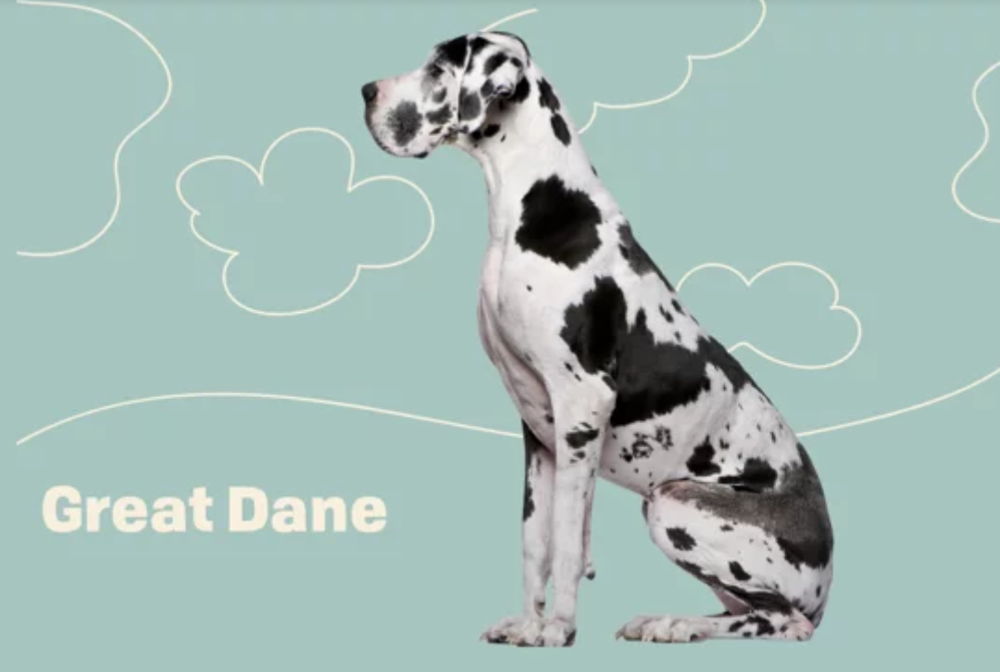

Is a Great Dane right for you?
January 7, 2021 | 3 comments
These gentle giants, which can grow to be the size of a small horse, are loving, loyal, and wonderful additions to families. They’re also alert guard dogs, intimidating in both sound and stature.
CONTINUE READING